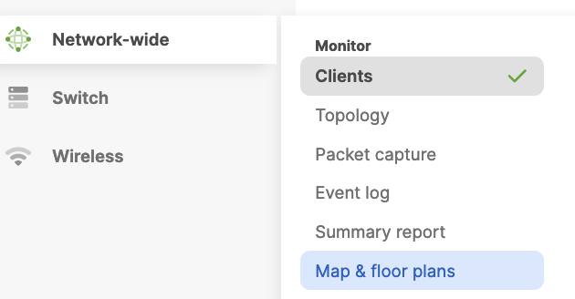
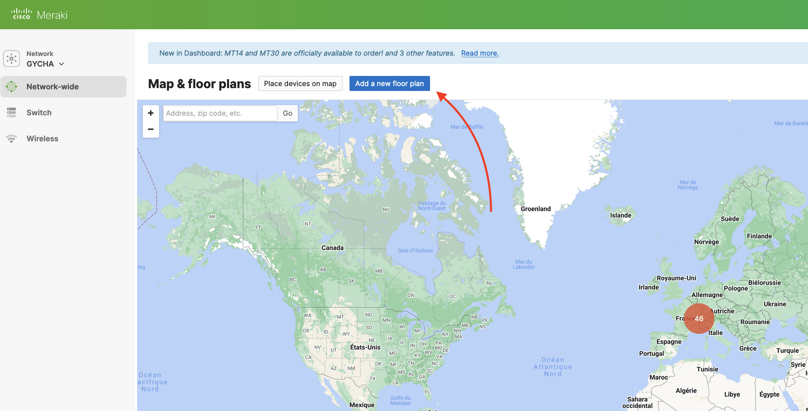
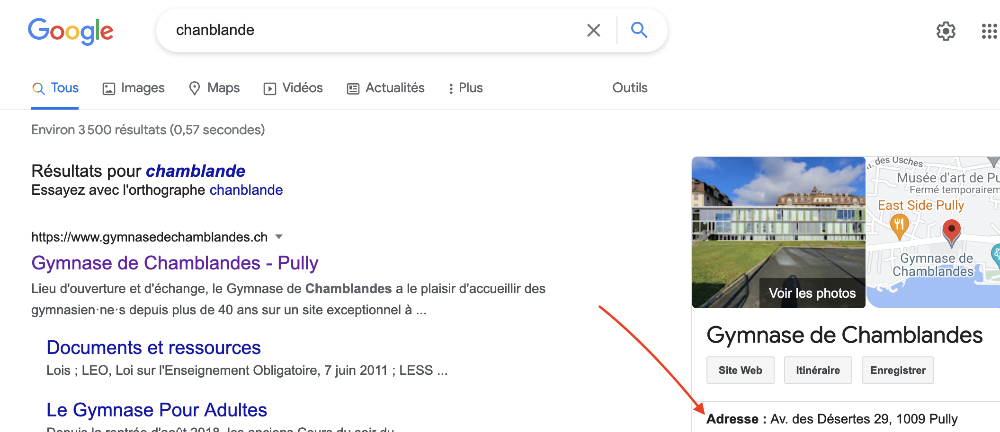
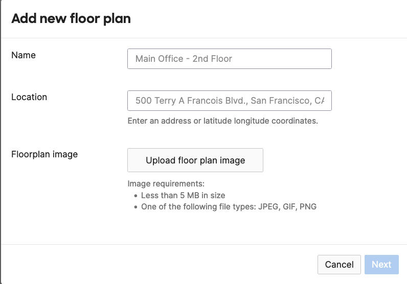
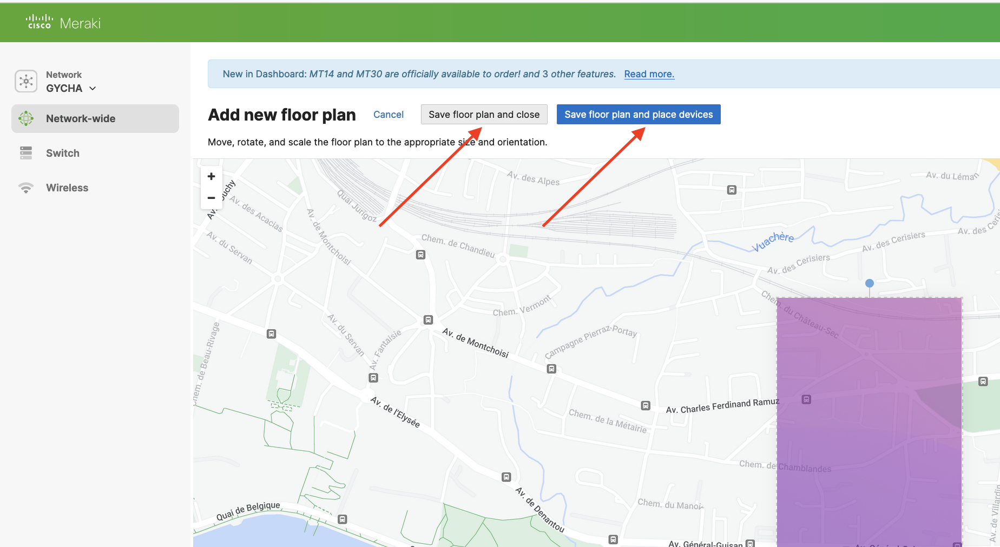

Cisco Meraki#
Meraki offre une gestion centralisée des appareils Cisco qui sont facilement accessible depuis un navigateur web ainsi que les telephones portables via Application Meraki.
Login#
Pour se connecter à l’interface WEB du Meraki, dabord il faut que vous demandiez à votre personne responsable d e céer un accès à cette interface, ensuite un email avec le lien pour créer un mot de passe sera envoyé dans votre boîte mail.
Ensuite, pour acceder au dashboard du Meraki, copiez le lien ci-dessous dans votre navigateur WEB:
https://n213.meraki.com
Ce lien vous amène ver la page login du site Meraki. Vous allez simplement tapper votre e-mail via le quel votre compte Meraki a été créé, ensuite tappez votre mot de passe.

Après avoir saisie l’identifiant et le mot de passe, si les informations ont été correctes, vous serez dirigez vers le “dashboard” du Meraki, qui va resembler à la photo ci-dessous.

Configuer un port#
Sur meraki vous pouvez configurer le port pour un swuitch à distant et le faire marcher via différents VLAN. Je vous montre comment configurer un port pour avoir accès au réseau imprimantes.
Allez sur le site Meraki et vous logger. Dans le menu à gauche choisissez Switchs.

Dans la list des switch, je choisis SW-A-A19-01 pour notre test.
{kind=link}
Maintenant on peut choisir quel port on veut configurer.

Je prends le port 13 comme c’est un port libre.
{kind=link}
On voit que ce port est configurer avec le VLAN 32 qui est le VLAN management, Trunk. Cliquez sur l’icône à coté de Configuration pour modifier le port.
Danse ces photo vous voyez les modifications nécessaire pour changer le VLAN
Ensuite sauvegardez votre modificaition, l’appareil qui sera connecté à ce port sera dans le VLAN 38, imprimantes.
Rajouter un ou plusieurs plan sur meraki#
Connecter vous sur meraki, ensuite aller sur “Network-wide” et selcetionner “Map & Floor plans”

{kind=link}
Vous devrez avoir quelque chose de similaire. Si c’est le cas cliquer sur le bouton bleu “add a New floor plan”

{kind=link}
Parfais, maintenant il vous faut l’adresse du lieux ou vous voulez poser votre plan, dans mon cas l’adresse du gymnase de Chamblandes, dans le votre certainement aussi. Il suffit de copier l’adresse et de la mettre sur “location” juste en dessous du nom qu’aura votre plan. Pour finir séléctionner une image de votre plan et cliquer sur next

{kind=link}

{kind=link}
Une fois que vous avez mis votre plan et que vous l’avez ajuste pour qu’il face la bonne taille et dimension par rapport a l’imeuble de la carte vous pouvez sauvegarder et fermer.

{kind=link}